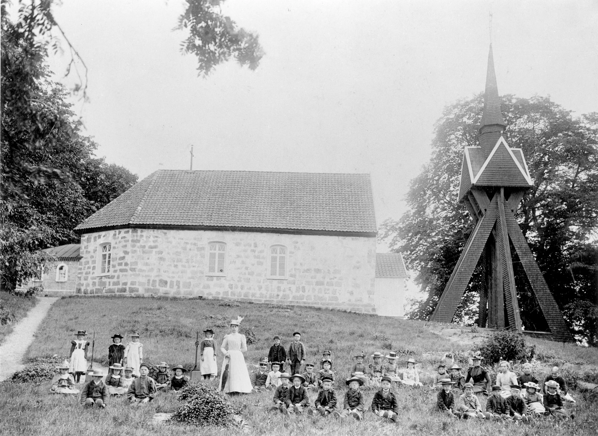

Byggnad på Velinga Backgården, "Prästegården". Skolan låg mellan vägen och kyrkstallen. Skylt uppsatt i maj 1989.
Särskild småskola inrättades genom beslut i sockenstämman den 25 april 1872. En byggnad intill kyrkan skulle tjäna både som skola för de yngre eleverna och som ålderdomshem, allt enligt boken ”Hökensås kommun en minnesskrift” utgiven 1976. I bottenvåningen fanns en skolsal och på andra våningen hade småskollärarinnan sin bostad. I byggnaden fanns också boende på socknens bekostnad, fattigstuga, i ett rum vardera för män och kvinnor.
Skolsalens utrustning
Skolsalen värmdes upp av en vedkamin. Salen var utrustad med en mindre och fristående ”svart tavla”. Där fanns också planscher med bibliska motiv, kuber med 10 centimeter långa sidor och en meterstock. De senare bör vara undervisningmaterial från den tid då Sverige bytte från de gamla måttformerna aln, fot osv. till det mer internationellt gångbara systemet med meter och centimeter, år 1988. Skrivövningar gjordes i en sandbänk. Denna var 60- 70 centimeter hög och bestod av en låda på ben. Lådan hade cirka 10 centimeter höga kanter och var inuti klädd med plåt. I den fina sanden fick barnen öva sig att skriva. Under de sista åren skolan var i bruk hade barnen tillgång till griffeltavlor.
I skolan fanns också en hög med trätofflor för barnen att ha som inneskor. Många av småskolans elever hade att gå en halvmil eller mer i regn, slask och snö för att komma till skolan. Småskolan finns med på bild, tagen från Mossagården 1904.
På senare delen av 1920-talet, sedan den nya skolan hade tagits i bruk, monterades husets timmerstomme ner. Huset kan, enligt berättelser i bygden, ha återuppförts i Hjo.
Lärare i Velinga gamla småskola
Varje onsdag kom folkskolläraren från Hadäng och skötte undervisningen i Velinga. Övriga dagar undervisade småskolelärarinnan. Under första verksamhetsåret, 1878- 1879, fick Karl Pettersson i Stommen Velinga vikariera som lärare i småskolan. Året därpå anställde socknen småskollärarinnan Klara Matilda Gustavsdotter- Törnqvist, född 1851 i Velinga. Hon tjänstgjorde fram till 1889 och flyttade året därpå till Amerika. Under åren 1890 till 1903 hette småskollärarinnan Matilda Brunqvist, född i Dala år 1861. Den sista lärarinnan att tjänstgöra i gamla småskolan var Olga Dahlström, född 1877 i Vartofta Åsaka. Hon kom till socknen 1903 och bodde under sina första år i socknen på ”skolejorden” i Svaneborg, se vidare nr 47.
År 1925 låg en folkskollärares månadslön på 175 kronor. Småskolslärarinnan tjänade då 137,50 kr i månaden.
Då Velingas nya skola stod klar vid vägskälet i byn år 1925 flyttade Olga Dahlström och hennes elever från den gamla slitna småskolan in i nya fina klassrum.

Småskoleklasserna i Velingas småskola poserar vid kyrkan omkring år 1900.Följande texter om den gamla småskolan är hämtade ur gamla kommunala protokoll
Dåvarande kommunalnämnd motsvarar våra tiders kommunstyrelse och kommunalstämman motsvarar nuvarande kommunfullmäktige.
23 mars 1926 kommunalnämnden:
§2 Nämnden beslöt att till stämman avge ett förslag angående frågan om de gamla skolorna att föreslå således att Hadängs skola får tills vidare disponeras av Fattigvårdsstyrelsen, som tillfälligt ålderdomshem, småskolan får tills vidare stå outhyrd tills frågan om ålderdomshemmet blir utredd och beslut fattat vilken skola som därtill ska komma ifråga.
22 december 1927. Protokoll fört vid offentlig auktion för försäljning av småskolan:
§1 Skolan jämte uthus försäljes som de står och befinns, med undantag av vedspis som finns i köket på nedre botten, ävenså stentrappan utanför, och om det till äventyrs i skolsalen eller i lägenheten befinns lösa saker tillhörande kommunen eller andra personers tillhörigheter, vilka således inte ingå i köpet. Husen skola rivas och avflyttas från platsen, och tomten befrias från allt vid rivningen uppkommande skräp bortforslas av köparen. Husen skola vara borta senast den 1 april 1928. De som bodde i skolan lämnas en frist av 14 dagar för avflyttning före rivningen av husen. Högsta anbudet avges av Elias Andersson Vrågården å kronor 1 075:- vilket klubbades.
(Elias Andersson bodde då i Furulund som låg på Vrågårdens mark, reds anm)
Protokoll 28 april 1928 kommunalnämnden
§1 Enär köparen av Velinga gamla småskola, Elias, trots upprepade anmaningar ej rivit skolan beslöt nämnden att inge till Kunglig Befallningshavare med begäran att köparen åläggas att fullgöra kontraktet.
Protokoll 2 oktober 1928 kommunalnämnden
§2 Kungliga Hovrättens resolution i anledning av besvär som anförts av Elias Andersson över Kungliga Majestätets befallningshavare i Skaraborgs län utslag angående handräckning för rivning av gamla småskolan i Velinga socken föredrogs och beslutade nämnden uppdraga åt Gustav Persson samt ordförande J Larsson att å nämndens vägnar till Göta Hovrätt ingiva förklaring i målet.
Protokoll 14 mars 1929 kommunalnämnden
§3 som Hovrättens dom angående överklagat handräckningsmål för fullgörande av köpekontraktet vid försäljning av gamla småskolan nu vunnit laga kraft och köparen ännu ej nedrivit huset beslöt nämnden att omedelbar handräckning skulle begäras hos Landsfiskalen för husets bortskaffande.
Följande uppgifter är hämtade ur kommunalnämndens protokoll från den 10 maj 1929
Järnspisen såldes till Larsson i Mossagården för 35 kronor. Nämnden uppdrog till ordförande att ombesörja att trappan vid skolan som nu rivits blir upplagd på lämplig plats på tomten tills vidare.
Tolkning: Troligen förhöll det sig så att Elias var tvungen att hitta avsättning för husstommen innan han kunde betala de dryga 1000 kronorna till socknen. Då detta dröjde kunde han inte fullgöra de åtaganden som fastslagits vid auktionen. Den i protokollet omskrivna trappan från småskolan finns idag som kökstrappa i Velinga Prästegård.